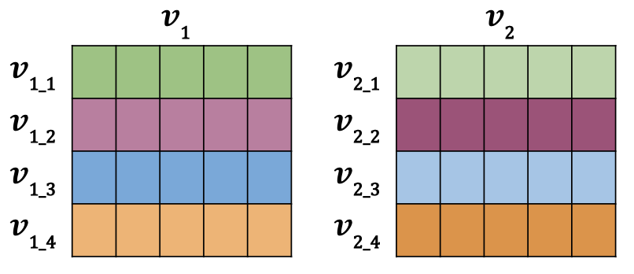
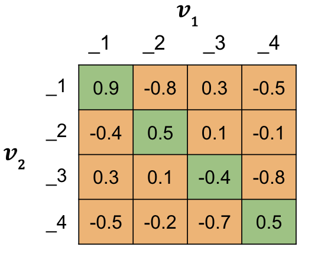

Modified Triplet Loss : Ungraded Lecture Notebook#
In this notebook you’ll see how to calculate the full triplet loss, step by step, including the mean negative and the closest negative. You’ll also calculate the matrix of similarity scores.
Background#
The original triplet loss function looks like this:
\(\mathcal{L_\mathrm{Original}} = \max{(\mathrm{s}(A,N) -\mathrm{s}(A,P) +\alpha, 0)},\)
where the inputs are the Anchor \(A\), Positive \(P\) and Negative \(N\).
As you learned in the lectures, this loss can be improved by including the mean negative and the closest negative terms, to create a new full loss function.
\(\mathcal{L_\mathrm{1}} = \max{(mean\_neg -\mathrm{s}(A,P) +\alpha, 0)}\)
\(\mathcal{L_\mathrm{2}} = \max{(closest\_neg -\mathrm{s}(A,P) +\alpha, 0)}\)
\(\mathcal{L_\mathrm{Full}} = \mathcal{L_\mathrm{1}} + \mathcal{L_\mathrm{2}}\)
Let me show you what that means exactly, and how to calculate each step.
Imports#
import numpy as np
import tensorflow as tf
Similarity Scores#
The first step is to calculate the matrix of similarity scores using cosine similarity so that you can look up \(\mathrm{s}(A,P)\), \(\mathrm{s}(A,N)\) as needed for the loss formulas.
Two Vectors#
First you will calculate the similarity score for 2 vectors using cosine similarity.
\(\mathrm{s}(v_1,v_2) = \mathrm{cosine \ similarity}(v_1,v_2) = \frac{v_1 \cdot v_2}{||v_1||~||v_2||}\)
Try changing the values in the second vector to see how it changes the cosine similarity.
# Two vector example
# Input data
v1 = np.array([1, 2, 3], dtype=float)
v2 = np.array([1, 2, 3.5], dtype=float) # notice the 3rd element is offset by 0.5
### START CODE HERE ###
# Try modifying the vector v2 to see how it impacts the cosine similarity
# v2 = v1 # identical vector
# v2 = v1 * -1 # opposite vector
# v2 = np.array([0,-42,1], dtype=float) # random example
### END CODE HERE ###
print("-- Inputs --")
print("v1 :", v1)
print("v2 :", v2, "\n")
# Similarity score
def cosine_similarity(v1, v2):
numerator = tf.math.reduce_sum(v1*v2) # takes the dot product between v1 and v2. Equivalent to np.dot(v1, v2)
denominator = tf.math.sqrt(tf.math.reduce_sum(v1*v1) * tf.math.reduce_sum(v2*v2))
return numerator / denominator
print("-- Outputs --")
print("cosine similarity :", cosine_similarity(v1, v2).numpy())
-- Inputs --
v1 : [1. 2. 3.]
v2 : [1. 2. 3.5]
-- Outputs --
cosine similarity : 0.9974086507360697
Observe that here we are explicitly dividing by \(\sqrt{\|{v_1}\| \|v_2\|}\), to compute the cosine similarity. However, the output of the Siamese network as you have seen it so far includes a normalizing layer, so that \(\|v_1\| = \|v_2\| = 1\)
Two Batches of Vectors#
Now you will see how to calculate the similarity scores, using cosine similarity for 2 batches of vectors. These are rows of individual vectors, just like in the example above, but stacked vertically into a matrix. They would look like the image below for a batch size (row count) of 4 and embedding size (column count) of 5.
The data is set up so that \(v_{1\_1}\) and \(v_{2\_1}\) represent duplicate inputs, but they are not duplicates with any other rows in the batch. This means \(v_{1\_1}\) and \(v_{2\_1}\) (green and green) have more similar vectors than say \(v_{1\_1}\) and \(v_{2\_2}\) (green and magenta).
You will see two different methods for calculating the matrix of similarities from 2 batches of vectors.

First you will create the similarity matrix for batches \(v_1\) and \(v_2\), filling each element of the matrix at a time. This involves two nested for loops, which isn’t very efficient. However it is very pedagogic, since you get to see how each element of the similarity matrix is created.
# Two batches of vectors example
# Input data
v1_1 = np.array([1.0, 2.0, 3.0])
v1_2 = np.array([9.0, 8.0, 7.0])
v1_3 = np.array([-1.0, -4.0, -2.0])
v1_4 = np.array([1.0, -7.0, 2.0])
v1 = np.vstack([v1_1, v1_2, v1_3, v1_4])
v2_1 = v1_1 + np.random.normal(0, 2, 3) # add some noise to create approximate duplicate
v2_2 = v1_2 + np.random.normal(0, 2, 3)
v2_3 = v1_3 + np.random.normal(0, 2, 3)
v2_4 = v1_4 + np.random.normal(0, 2, 3)
v2 = np.vstack([v2_1, v2_2, v2_3, v2_4])
print("-- Inputs --")
print(f"v1 :\n{v1}\n")
print(f"v2 :\n{v2}\n")
# Batch sizes must match
b = len(v1)
print(f"Batch sizes match : {b == len(v2)}\n")
# Similarity scores
# Option 1 : nested loops and the cosine similarity function
sim_1 = np.zeros([b, b]) # empty array to take similarity scores
# Loop
for row in range(0, sim_1.shape[0]):
for col in range(0, sim_1.shape[1]):
sim_1[row, col] = cosine_similarity(v2[row], v1[col]).numpy()
print("-- Outputs --")
print("Option 1 : loop")
print(sim_1)
-- Inputs --
v1 :
[[ 1. 2. 3.]
[ 9. 8. 7.]
[-1. -4. -2.]
[ 1. -7. 2.]]
v2 :
[[ 2.17613556 -0.09904453 3.61863292]
[11.90448668 5.09785185 9.57643139]
[-1.47689232 -4.30889953 -2.07969816]
[-0.96804622 -7.15590313 2.24119104]]
Batch sizes match : True
-- Outputs --
Option 1 : loop
[[ 0.81208259 0.75001699 -0.46587265 0.32562451]
[ 0.84344326 0.95820265 -0.69705882 -0.03909889]
[-0.87180618 -0.8935759 0.99675736 0.66654134]
[-0.30244627 -0.47736061 0.72468931 0.96480834]]
Now, you can repeat the procedure applying vectorization, so the computations are more efficient. For this small example you will not notice a difference, but for training a big model this is crucial.
# Option 2 : vector normalization and dot product
def norm(x):
return tf.math.l2_normalize(x, axis=1) # use tensorflow built in normalization
sim_2 = tf.linalg.matmul(norm(v2), norm(v1), transpose_b=True)
print("-- Outputs --")
print("Option 2 : vector normalization and dot product")
print(sim_2, "\n")
# Check
print(f"Outputs are the same : {np.allclose(sim_1, sim_2)}")
-- Outputs --
Option 2 : vector normalization and dot product
tf.Tensor(
[[ 0.81208259 0.75001699 -0.46587265 0.32562451]
[ 0.84344326 0.95820265 -0.69705882 -0.03909889]
[-0.87180618 -0.8935759 0.99675736 0.66654134]
[-0.30244627 -0.47736061 0.72468931 0.96480834]], shape=(4, 4), dtype=float64)
Outputs are the same : True
Hard Negative Mining#
You will now calculate the mean negative \(mean\_neg\) and the closest negative \(close\_neg\) used in calculating \(\mathcal{L_\mathrm{1}}\) and \(\mathcal{L_\mathrm{2}}\).
\(\mathcal{L_\mathrm{1}} = \max{(mean\_neg -\mathrm{s}(A,P) +\alpha, 0)}\)
\(\mathcal{L_\mathrm{2}} = \max{(closest\_neg -\mathrm{s}(A,P) +\alpha, 0)}\)
You’ll do this using the matrix of similarity scores you already know how to make, like the example below for a batch size of 4. The diagonal of the matrix contains all the \(\mathrm{s}(A,P)\) values, similarities from duplicate question pairs (aka Positives). This is an important attribute for the calculations to follow.

Mean Negative#
\(mean\_neg\) is the average of the off diagonals, the \(\mathrm{s}(A,N)\) values, for each row.
Closest Negative#
\(closest\_neg\) is the largest off diagonal value, \(\mathrm{s}(A,N)\), that is smaller than the diagonal \(\mathrm{s}(A,P)\) for each row.
Try using a different matrix of similarity scores.
First, try the implementation in NumPy.
# Hardcoded matrix of similarity scores
sim_hardcoded = np.array(
[
[0.9, -0.8, 0.3, -0.5],
[-0.4, 0.5, 0.1, -0.1],
[0.3, 0.1, -0.4, -0.8],
[-0.5, -0.2, -0.7, 0.5],
]
)
sim = sim_hardcoded
### START CODE HERE ###
# Try using different values for the matrix of similarity scores
# sim = 2 * np.random.random_sample((b,b)) -1 # random similarity scores between -1 and 1
# sim = sim_2 # the matrix calculated previously using vector normalization and dot product
### END CODE HERE ###
# Batch size
b = sim.shape[0]
print("-- Inputs --")
print(f"sim:")
print(sim)
print(f"shape: {sim.shape}\n")
# Positives
# All the s(A,P) values : similarities from duplicate question pairs (aka Positives)
# These are along the diagonal
sim_ap = np.diag(sim)
print("sim_ap:")
print(np.diag(sim_ap))
# Negatives
# all the s(A,N) values : similarities the non duplicate question pairs (aka Negatives)
# These are in the off diagonals
sim_an = sim - np.diag(sim_ap)
print("\nsim_an:")
print(sim_an)
print("\n-- Outputs --")
# Mean negative
# Average of the s(A,N) values for each row
mean_neg = np.sum(sim_an, axis=1, keepdims=True) / (b - 1)
print("\nmean_neg:")
print(mean_neg)
# Closest negative
# Max s(A,N) that is <= s(A,P) for each row
mask_1 = np.identity(b) == 1 # mask to exclude the diagonal
mask_2 = sim_an > sim_ap.reshape(b, 1) # mask to exclude sim_an > sim_ap
mask = mask_1 | mask_2
sim_an_masked = np.copy(sim_an) # create a copy to preserve sim_an
sim_an_masked[mask] = -2
closest_neg = np.max(sim_an_masked, axis=1, keepdims=True)
print("\nclosest_neg :")
print(closest_neg)
-- Inputs --
sim:
[[ 0.9 -0.8 0.3 -0.5]
[-0.4 0.5 0.1 -0.1]
[ 0.3 0.1 -0.4 -0.8]
[-0.5 -0.2 -0.7 0.5]]
shape: (4, 4)
sim_ap:
[[ 0.9 0. 0. 0. ]
[ 0. 0.5 0. 0. ]
[ 0. 0. -0.4 0. ]
[ 0. 0. 0. 0.5]]
sim_an:
[[ 0. -0.8 0.3 -0.5]
[-0.4 0. 0.1 -0.1]
[ 0.3 0.1 0. -0.8]
[-0.5 -0.2 -0.7 0. ]]
-- Outputs --
mean_neg:
[[-0.33333333]
[-0.13333333]
[-0.13333333]
[-0.46666667]]
closest_neg :
[[ 0.3]
[ 0.1]
[-0.8]
[-0.2]]
Now have a look at the implementation in TensorFlow.
# Hardcoded matrix of similarity scores
sim_hardcoded = np.array(
[
[0.9, -0.8, 0.3, -0.5],
[-0.4, 0.5, 0.1, -0.1],
[0.3, 0.1, -0.4, -0.8],
[-0.5, -0.2, -0.7, 0.5],
]
)
sim = sim_hardcoded
### START CODE HERE ###
# Try using different values for the matrix of similarity scores
# sim = 2 * np.random.random_sample((b,b)) -1 # random similarity scores between -1 and 1
# sim = sim_2 # the matrix calculated previously using vector normalization and dot product
### END CODE HERE ###
# Batch size
b = sim.shape[0]
print("-- Inputs --")
print("sim :")
print(sim)
print("shape :", sim.shape, "\n")
# Positives
# All the s(A,P) values : similarities from duplicate question pairs (aka Positives)
# These are along the diagonal
sim_ap = tf.linalg.diag_part(sim) # this is just a 1D array of diagonal elements
print("sim_ap :")
# tf.linalg.diag makes a diagonal matrix given an array
print(tf.linalg.diag(sim_ap), "\n")
# Negatives
# all the s(A,N) values : similarities the non duplicate question pairs (aka Negatives)
# These are in the off diagonals
sim_an = sim - tf.linalg.diag(sim_ap)
print("sim_an :")
print(sim_an, "\n")
print("-- Outputs --")
# Mean negative
# Average of the s(A,N) values for each row
mean_neg = tf.math.reduce_sum(sim_an, axis=1) / (b - 1)
print("mean_neg :")
print(mean_neg, "\n")
# Closest negative
# Max s(A,N) that is <= s(A,P) for each row
mask_1 = tf.eye(b) == 1 # mask to exclude the diagonal
mask_2 = sim_an > tf.expand_dims(sim_ap, 1) # mask to exclude sim_an > sim_ap
mask = tf.cast(mask_1 | mask_2, tf.float64)
sim_an_masked = sim_an - 2.0*mask
closest_neg = tf.math.reduce_max(sim_an_masked, axis=1)
print("closest_neg :")
print(closest_neg, "\n")
-- Inputs --
sim :
[[ 0.9 -0.8 0.3 -0.5]
[-0.4 0.5 0.1 -0.1]
[ 0.3 0.1 -0.4 -0.8]
[-0.5 -0.2 -0.7 0.5]]
shape : (4, 4)
sim_ap :
tf.Tensor(
[[ 0.9 0. 0. 0. ]
[ 0. 0.5 0. 0. ]
[ 0. 0. -0.4 0. ]
[ 0. 0. 0. 0.5]], shape=(4, 4), dtype=float64)
sim_an :
tf.Tensor(
[[ 0. -0.8 0.3 -0.5]
[-0.4 0. 0.1 -0.1]
[ 0.3 0.1 0. -0.8]
[-0.5 -0.2 -0.7 0. ]], shape=(4, 4), dtype=float64)
-- Outputs --
mean_neg :
tf.Tensor([-0.33333333 -0.13333333 -0.13333333 -0.46666667], shape=(4,), dtype=float64)
closest_neg :
tf.Tensor([ 0.3 0.1 -0.8 -0.2], shape=(4,), dtype=float64)
The Loss Functions#
The last step is to calculate the loss functions.
\(\mathcal{L_\mathrm{1}} = \max{(mean\_neg -\mathrm{s}(A,P) +\alpha, 0)}\)
\(\mathcal{L_\mathrm{2}} = \max{(closest\_neg -\mathrm{s}(A,P) +\alpha, 0)}\)
\(\mathcal{L_\mathrm{Full}} = \mathcal{L_\mathrm{1}} + \mathcal{L_\mathrm{2}}\)
# Alpha margin
alpha = 0.25
# Modified triplet loss
# Loss 1
l_1 = tf.maximum(mean_neg - sim_ap + alpha, 0)
print(f"Loss 1: {l_1}\n")
# Loss 2
l_2 = tf.maximum(closest_neg - sim_ap + alpha, 0)
print(f"Loss 2: {l_2}\n")
# Loss full<
l_full = l_1 + l_2
# Cost
cost = tf.math.reduce_sum(l_full)
print("-- Outputs --")
print("Loss full :")
print(l_full, "\n")
print("Cost :", "{:.3f}".format(cost))
Loss 1: [0. 0. 0.51666667 0. ]
Loss 2: [0. 0. 0. 0.]
-- Outputs --
Loss full :
tf.Tensor([0. 0. 0.51666667 0. ], shape=(4,), dtype=float64)
Cost : 0.517
Summary#
There were a lot of steps in there, so well done. You can now calculate a modified triplet loss, incorporating the mean negative and the closest negative. You also learned how to create a matrix of similarity scores based on cosine similarity.